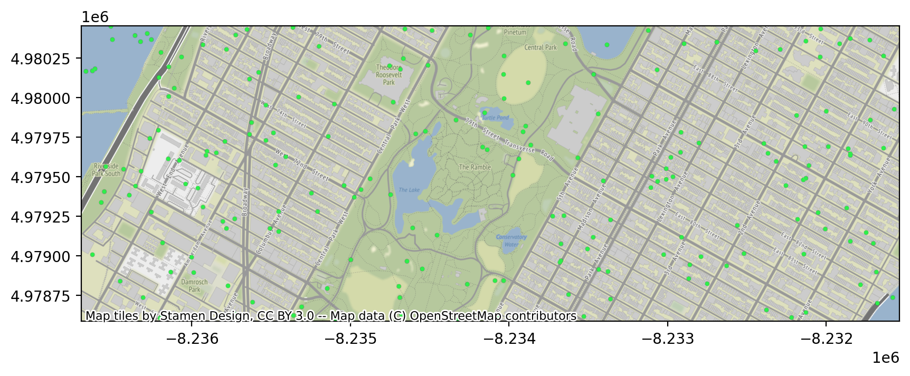
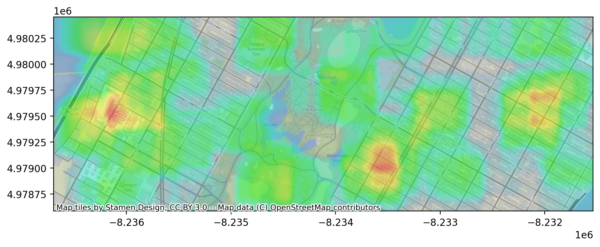
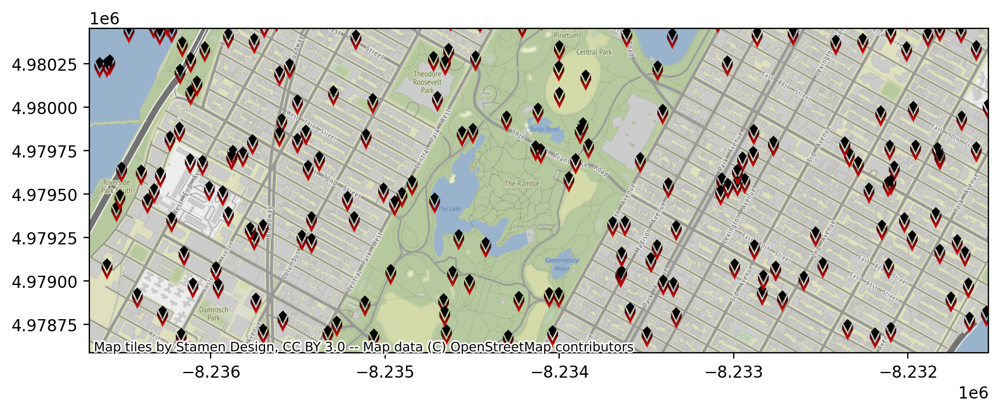
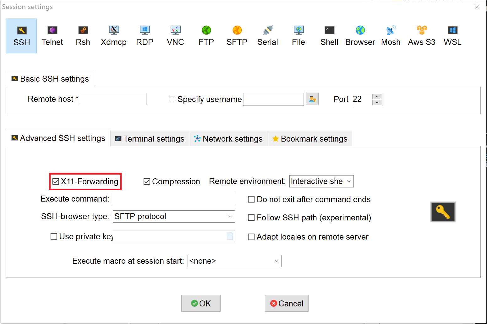

Visualizing Spatiotemporal Information via Arctern¶
Arctern can draw multiple types of transparent layers and add a map background to these images. This article shows how to use Arctern to visualizing spatiotemporal information.
Generate simulation data¶
Use random data to generate a taxi trip record data, which will be used later to make various plots:
>>> import pandas as pd
>>>
>>> def gen_data(num_rows, bbox):
... import random
... pickup_longitude = [(bbox[2]-bbox[0])*random.random()+bbox[0] for i in range(num_rows)]
... pickup_latitude = [(bbox[3]-bbox[1])*random.random()+bbox[1] for i in range(num_rows)]
... fare_amount = [100*random.random() for i in range(num_rows)]
... tip_amount = [fare*(random.random()*0.05+0.15) for fare in fare_amount]
... total_amount = [fare_amount[i]+tip_amount[i] for i in range(num_rows)]
... return pd.DataFrame({"pickup_longitude":pickup_longitude,
... "pickup_latitude":pickup_latitude,
... "fare_amount":fare_amount,
... "total_amount":total_amount})
>>> num_rows=200
>>> bbox=[-73.991504, 40.770759, -73.945155, 40.783434]
>>> df=gen_data(num_rows,bbox)
>>> df
In the geographic area with a longitude range of -73.991504 ~ -73.945155 and a latitude range of 40.770759 ~ 40.783434, the above code randomly extracts 200 coordinate points as pickup locations and generates random taxi fares accordingly. The description of the taxi trip record data is as follows:
| Name | Description | Type |
|---|---|---|
| pickup_longitude | Longitude coordinate of where the taxi ride started | double |
| pickup_latitude | Latitude coordinate of where the taxi ride started. | double |
| fare_amount | Dollar amount of the cost of the taxi ride without any tip. | double |
| total_amount | Total dollar amount of the cost of the taxi ride including the tip. | double |
Installing dependencies¶
$ conda install -c conda-forge matplotlib
$ conda install -c conda-forge contextily
$ conda install -c conda-forge pyproj
Import plot modules¶
Import the following libraries:
arctern: Provides modules for drawing and saving geographic information layers.
matplotlib: Provides modules for drawing pictures in Juypter Notebook.
>>> import arctern
>>> from arctern.util import save_png, vega
>>> import matplotlib.pyplot as plt
>>> import matplotlib.image as mpimg
Point map¶
Use the plot.pointmap method to draw a point map based on the taxi trip record data. For each point, its position is defined by the pickup location, its size is 10, its color is # 2DEF4A, and its opacity is 1.
>>> fig, ax = plt.subplots(figsize=(10, 6), dpi=200)
>>> arctern.plot.pointmap(ax,
... arctern.GeoSeries.point(df.pickup_longitude,df.pickup_latitude),
... bbox,
... point_size=10,
... point_color="#2DEF4A",
... opacity=1,
... coordinate_system="EPSG:4326")

Weighted point map¶
Use the plot.weighted_pointmap method to draw a weighted point map based on the taxi trip record data. For each point, its position is defined by the pickup location, its color varies between # 115f9a ~ # d0f400 according to the taxi trip fare (df.fare_amount), its size varies between 5 ~ 30 according to the total taxi fare ( df.total_amount), its opacity is 1.
>>> color_bound=[df.fare_amount.min(), df.fare_amount.max()]
>>>
>>> size_bound=[5, 30]
>>> total_max=df.total_amount.max()
>>> total_min=df.total_amount.min()
>>> size_weights = [(v-total_min)/(total_max-total_min)*(size_bound[1]-size_bound[0])+size_bound[0] for v in df.total_amount]
>>> size_weights = pd.Series(size_weights)
>>>
>>> fig, ax = plt.subplots(figsize=(10, 6), dpi=200)
>>> arctern.plot.weighted_pointmap(ax,
... arctern.GeoSeries.point(df.pickup_longitude,df.pickup_latitude),
... color_weights=df.fare_amount,
... size_weights=size_weights,
... bounding_box=bbox,
... color_gradient=["#115f9a", "#d0f400"],
... color_bound=color_bound,
... size_bound=size_bound,
... opacity=1.0,
... coordinate_system="EPSG:4326")
Heat map¶
Use the plot.heatmap method to draw a heat map based on the taxi trip record data. The color of each position is decided by the total taxi fare ( df.total_amount).
>>> fig, ax = plt.subplots(figsize=(10, 6), dpi=200)
>>> arctern.plot.heatmap(ax,
... arctern.GeoSeries.point(df.pickup_longitude,df.pickup_latitude),
... df.fare_amount,
... bbox,
... coordinate_system="EPSG:4326")

Choropleth map¶
The choropleth map can draw a large number of building outlines within a geographical area. In order to simply demonstrate how to draw construction contours, we only create two POLYGON objects p1 and p2 to describe the outlines of two buildings.
>>> p1="POLYGON ((-73.9559920952719 40.7798302112586,-73.9558373836227 40.780041920447,-73.955817052153 40.7800697417696,-73.9561541507251 40.7802120850128,-73.9560310179165 40.780380581462,-73.9559809829928 40.7804490491413,-73.9554245436102 40.780214085171,-73.9552722050953 40.7801497573115,-73.9554553121101 40.7798991968954,-73.9556088484124 40.7796890996611,-73.955620419799 40.7796732651862,-73.9559015149432 40.7797919620232,-73.9559920952719 40.7798302112586))"
>>> p2="POLYGON ((-73.9542329907899 40.7787670145087,-73.9545101860555 40.7783876598084,-73.9546846384315 40.778461320293,-73.9548206058685 40.7785187302746,-73.9549036921298 40.7785538112695,-73.9550251774329 40.7786051054324,-73.9550562469185 40.7786182243649,-73.9549683394669 40.7787385313679,-73.9547798956672 40.778996428053,-73.954779053804 40.7789975803655,-73.9545166590009 40.7788867891633,-73.9544446005066 40.7788563633454,-73.9542329907899 40.7787670145087))"
Use the plot.choroplethmap method to draw a choropleth map based on the description of two building outlines p1 and p2.
>>> fig, ax = plt.subplots(figsize=(10, 6), dpi=200)
>>> arctern.plot.choroplethmap(ax,
... arctern.GeoSeries([p1,p2]),
... pd.Series([50,50]),
... bbox,
... color_gradient=["#115f9a", "#d0f400"],
... color_bound=[2.5, 5],
... opacity=1.0,
... coordinate_system="EPSG:4326")
Icon map¶
Download an icon image that will be used later to draw icon maps:
$ wget https://raw.githubusercontent.com/zilliztech/arctern-docs/branch-0.2.x/img/icon/icon.png -o /tmp/icon.png
Use the plot.iconviz method to draw an icon map based on the taxi trip record data. The position of each icon is defined by the pickup location.
>>> fig, ax = plt.subplots(figsize=(10, 6), dpi=200)
>>> arctern.plot.iconviz(ax,
... arctern.GeoSeries.point(df.pickup_longitude,df.pickup_latitude),
... icon_path="/tmp/icon.png",
... icon_size=[17, 33],
... bounding_box=bbox,
... coordinate_system="EPSG:4326")

Fishnet map¶
Use the plot.fishnetmap method to draw a fishnet map based on the taxi trip record data. The position of each icon is defined by the pickup location.
>>> fig, ax = plt.subplots(figsize=(10, 6), dpi=200)
>>> arctern.plot.fishnetmap(ax,
... arctern.GeoSeries.point(df.pickup_longitude,df.pickup_latitude),
... df.fare_amount,
... bbox,
... cell_size=8,
... cell_spacing=1,
... opacity=1.0,
... coordinate_system="EPSG:4326")
FAQ¶
Why do my graphs only show the map background?¶
This problem happens when you are using MobaXterm to connect to the Linux system where the Arctern server is deployed from a Windows system, and the X11-Forwarding option is enabled in MobaXterm.
Run the echo $DISPLAY command to check whether X11-Forwarding is enabled. If the result is similar to localhost:xx.x, then X11-Forwarding is turned on, and you should uncheck this option in MobaXterm:
